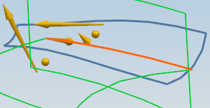
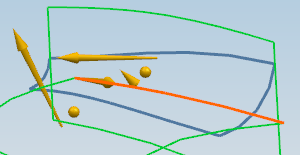
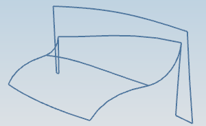
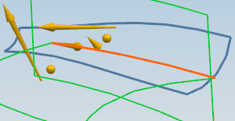
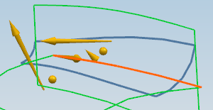
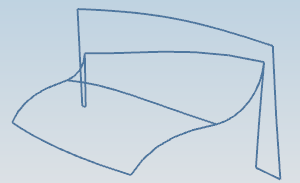

设置修剪和缝合选项
-
展开修剪和缝合选项组，并确保已选中修剪输入面至圆角面
 以及缝合所有面 复选框。
以及缝合所有面 复选框。 -
在圆角面列表中，选择不修剪圆角面。

注意圆角面将延伸至超出所有输入面。
-
在圆角面列表中，选择修剪至长输入面。

注意到圆角面被修剪至最长输入面的长度，并且超出短输入面。
修剪至短输入面将与修剪输入面至圆角面复选框
一起使用，结果显示在下图中。
展开修剪和缝合选项组，并确保已选中修剪输入面至圆角面  以及缝合所有面
以及缝合所有面  复选框。
复选框。
在圆角面列表中，选择不修剪圆角面。

注意圆角面将延伸至超出所有输入面。
在圆角面列表中，选择修剪至长输入面。

注意到圆角面被修剪至最长输入面的长度，并且超出短输入面。
修剪至短输入面将与修剪输入面至圆角面复选框  一起使用，结果显示在下图中。
一起使用，结果显示在下图中。
